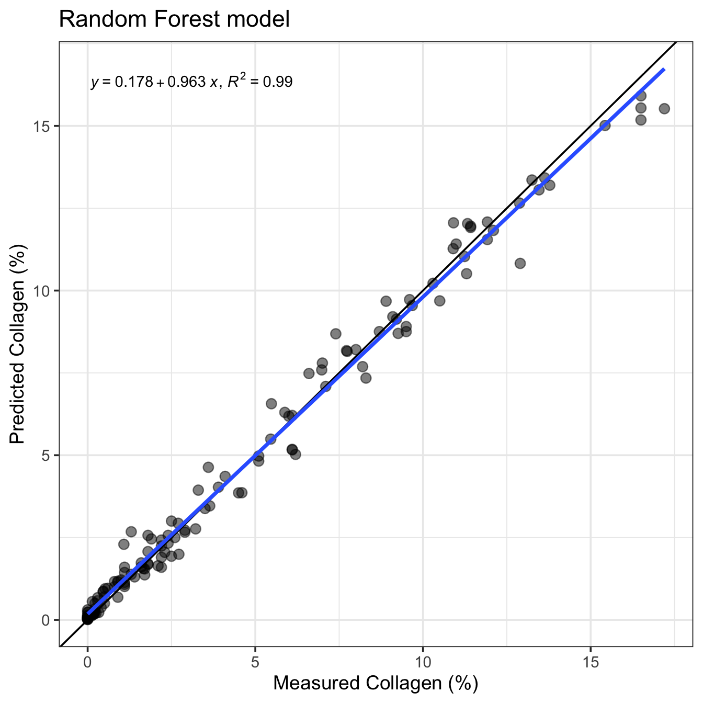

[1] "X780" "X781" "X782" "X783" "X784" "X785"[1] "X2495" "X2496" "X2497" "X2498" "X2499" "X2500"[1] "X2030" "X2031" "X2032" "X2033" "X2034" "X2035"[1] "X2055" "X2056" "X2057" "X2058" "X2059" "X2060"R code running random forest models
[1] "X780" "X781" "X782" "X783" "X784" "X785"[1] "X2495" "X2496" "X2497" "X2498" "X2499" "X2500"[1] "X2030" "X2031" "X2032" "X2033" "X2034" "X2035"[1] "X2055" "X2056" "X2057" "X2058" "X2059" "X2060"[1] 8note: only 22 unique complexity parameters in default grid. Truncating the grid to 22 .Random Forest
100 samples
1721 predictors
No pre-processing
Resampling: Leave-One-Out Cross-Validation
Summary of sample sizes: 99, 99, 99, 99, 99, 99, ...
Resampling results across tuning parameters:
mtry RMSE Rsquared MAE
2 1.663907 0.8826869 1.174513
3 1.620506 0.8870054 1.129415
5 1.553415 0.8952318 1.075971
6 1.554553 0.8948305 1.080807
9 1.521414 0.8989322 1.066216
12 1.527305 0.8977717 1.070732
17 1.497054 0.9018650 1.043886
23 1.484513 0.9033457 1.038697
31 1.480042 0.9038698 1.033669
43 1.490680 0.9022590 1.048456
58 1.489386 0.9024386 1.048712
79 1.484249 0.9029078 1.037677
108 1.501179 0.9007500 1.056984
147 1.487176 0.9025429 1.037759
200 1.489725 0.9022031 1.048055
272 1.490575 0.9021659 1.037671
370 1.497634 0.9012608 1.038518
503 1.502686 0.9005355 1.052145
684 1.514074 0.8989829 1.054812
931 1.515860 0.8988813 1.057947
1265 1.495127 0.9017488 1.036291
1721 1.492744 0.9021198 1.033704
RMSE was used to select the optimal model using the smallest value.
The final value used for the model was mtry = 31.
Call:
randomForest(x = x, y = y, mtry = param$mtry, n.tree = 500)
Type of random forest: regression
Number of trees: 500
No. of variables tried at each split: 31
Mean of squared residuals: 2.153359
% Var explained: 90.45
[1] 8note: only 22 unique complexity parameters in default grid. Truncating the grid to 22 .Random Forest
140 samples
1721 predictors
No pre-processing
Resampling: Leave-One-Out Cross-Validation
Summary of sample sizes: 139, 139, 139, 139, 139, 139, ...
Resampling results across tuning parameters:
mtry RMSE Rsquared MAE
2 1.563020 0.8955138 1.1198950
3 1.513672 0.9006039 1.0701058
5 1.461503 0.9063097 1.0330834
6 1.447359 0.9080935 1.0154595
9 1.434249 0.9091709 1.0158920
12 1.405147 0.9128974 0.9907627
17 1.386666 0.9151020 0.9774569
23 1.386011 0.9150356 0.9774849
31 1.350816 0.9191742 0.9536603
43 1.347188 0.9196125 0.9506818
58 1.342496 0.9200857 0.9554923
79 1.339326 0.9204153 0.9456004
108 1.340920 0.9203053 0.9541225
147 1.337211 0.9207454 0.9499291
200 1.337281 0.9205763 0.9538214
272 1.341735 0.9202112 0.9493153
370 1.343109 0.9200691 0.9559586
503 1.341711 0.9201666 0.9638835
684 1.338975 0.9207018 0.9489696
931 1.343123 0.9201338 0.9538604
1265 1.346294 0.9196336 0.9539093
1721 1.346946 0.9196176 0.9569579
RMSE was used to select the optimal model using the smallest value.
The final value used for the model was mtry = 147.
Call:
randomForest(x = x, y = y, mtry = param$mtry, n.tree = 500)
Type of random forest: regression
Number of trees: 500
No. of variables tried at each split: 147
Mean of squared residuals: 1.794788
% Var explained: 91.97
[1] 8Random Forest
100 samples
31 predictor
No pre-processing
Resampling: Leave-One-Out Cross-Validation
Summary of sample sizes: 99, 99, 99, 99, 99, 99, ...
Resampling results across tuning parameters:
mtry RMSE Rsquared MAE
2 1.584860 0.8888719 1.155918
3 1.614375 0.8848718 1.181721
4 1.598307 0.8871057 1.160567
5 1.630785 0.8826875 1.183033
7 1.653535 0.8796886 1.189686
8 1.654315 0.8796638 1.198047
9 1.660017 0.8787214 1.194572
11 1.673709 0.8767030 1.204027
12 1.689732 0.8746300 1.207101
13 1.696169 0.8735944 1.217408
15 1.695760 0.8740030 1.213790
16 1.709489 0.8717585 1.225984
17 1.705669 0.8724752 1.213278
19 1.716567 0.8709609 1.219127
20 1.714346 0.8714591 1.229161
21 1.727028 0.8695771 1.235891
23 1.716320 0.8716049 1.220664
24 1.713126 0.8719822 1.219958
25 1.710213 0.8721936 1.215854
27 1.730115 0.8691906 1.235579
28 1.709322 0.8722026 1.219812
29 1.736782 0.8682343 1.232325
31 1.733522 0.8685739 1.230825
RMSE was used to select the optimal model using the smallest value.
The final value used for the model was mtry = 2.
Call:
randomForest(x = x, y = y, mtry = param$mtry, n.tree = 500)
Type of random forest: regression
Number of trees: 500
No. of variables tried at each split: 2
Mean of squared residuals: 2.474027
% Var explained: 89.03[1] 8Random Forest
140 samples
31 predictor
No pre-processing
Resampling: Leave-One-Out Cross-Validation
Summary of sample sizes: 139, 139, 139, 139, 139, 139, ...
Resampling results across tuning parameters:
mtry RMSE Rsquared MAE
2 1.540382 0.8940029 1.102192
3 1.552239 0.8924021 1.120650
4 1.541664 0.8939507 1.110536
5 1.559593 0.8916042 1.118066
7 1.575689 0.8893463 1.128403
8 1.578598 0.8890694 1.128335
9 1.577835 0.8890956 1.122317
11 1.590114 0.8875624 1.136372
12 1.594239 0.8868946 1.137822
13 1.600894 0.8859856 1.132963
15 1.620571 0.8834126 1.149898
16 1.616738 0.8838135 1.150416
17 1.614938 0.8841957 1.144096
19 1.620798 0.8833783 1.147257
20 1.617064 0.8837535 1.146959
21 1.619819 0.8835462 1.144446
23 1.637044 0.8810754 1.159093
24 1.623562 0.8829172 1.152618
25 1.638592 0.8808969 1.160781
27 1.636267 0.8813333 1.156557
28 1.639486 0.8806656 1.161609
29 1.641707 0.8804438 1.163291
31 1.640138 0.8808270 1.160451
RMSE was used to select the optimal model using the smallest value.
The final value used for the model was mtry = 2.
Call:
randomForest(x = x, y = y, mtry = param$mtry, n.tree = 500)
Type of random forest: regression
Number of trees: 500
No. of variables tried at each split: 2
Mean of squared residuals: 2.382343
% Var explained: 89.34